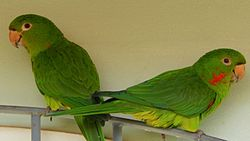
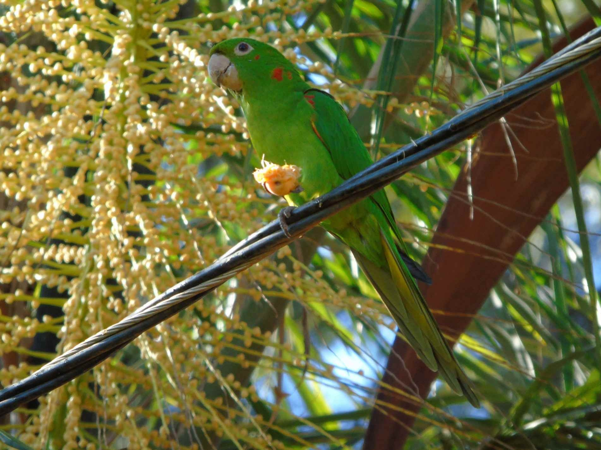
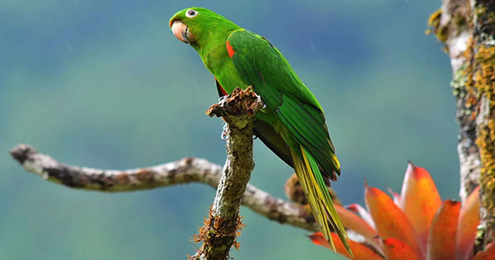
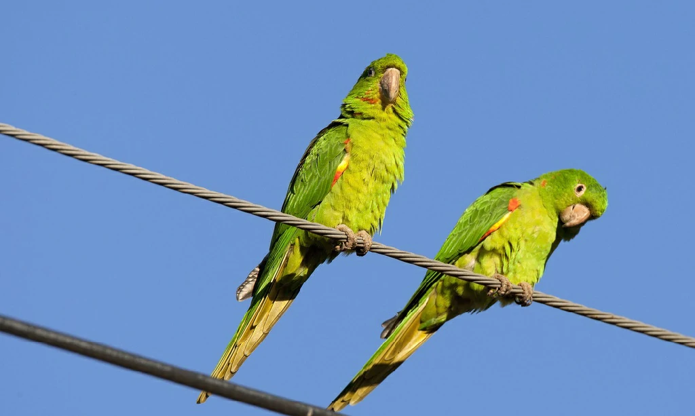
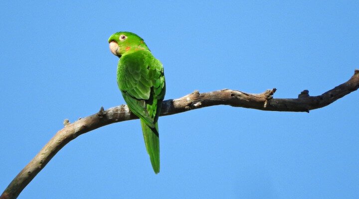
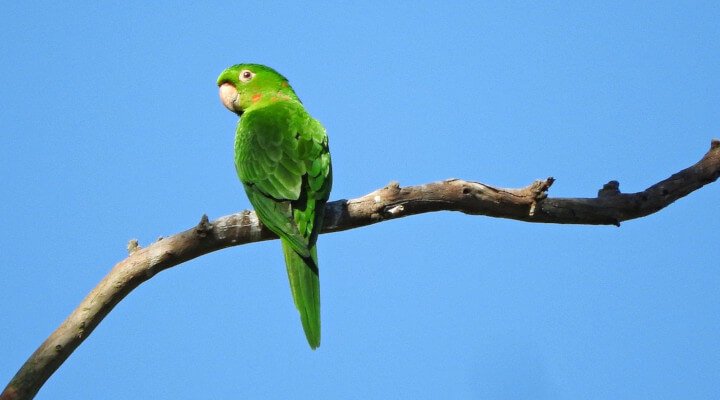
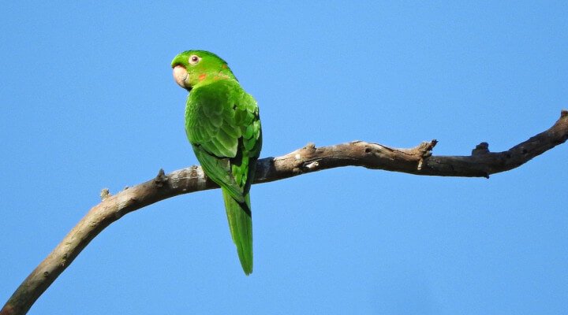
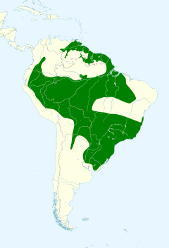

Maritaca




 


INFORMAÇÕES SOBRE O ANIMAL
- Nome Científico: Psittacara leucophthalmus
(Statius Muller, 1776) - Nomes Populares: Baetá, baetaca, baiatá, baitá, baitaca, curica, guaracininga, guaracinunga, humaitá, maetá, maetaca, maitá, mai-tá, maitaca, maritaca, cocota, puxicaraim, Loiro, suia e xia são designações comuns para diversas espécies de aves psitaciformes da família dos Psittacidaes do gênero Pionus.
- Atualmente a espécie não corre risco de extinção.
Classificação Biológica
- Dominio: Eukaryota
- Reino: Animalia
- Filo: Chordata
- Classe Aves
- Ordem: Psittaciformes
- Família: Psittacidae
- Espécie: P. leucophthalmus
Nutrição Geral
- Tipo de Nutrição: Heterotrófico.
- O Psittacara leucophthalmus, possui uma dieta variada que inclui principalmente frutos e sementes. Eles também consomem flores, como as da quaresmeira (Tibouchina granulosa, Melastomataceae)1. Essas aves são frequentemente observadas procurando alimento tanto em copas de árvores altas quanto em arbustos frutíferos dentro de florestas e bordas de mata. Além disso, em áreas urbanas, eles também saem em busca de frutos e sementes.
- Se adaptam facilmente a áreas urbanas e degradadas, desde que existam fontes de alimento e lugares para nidificação. Eles podem ser vistos em bandos de 5 a 40 indivíduos, tanto em zonas de bosques húmedos ou planícies quanto em centros urbanos. Em regiões agrícolas, a abundância de culturas fornece um suprimento constante de alimentos, favorecendo a permanência dessas aves na área.
Morfologia Básica e Coloração
- Cabeça: Forma Oval.
- Coloração: Predominantemente verde, com lados da cabeça e pescoço apresentando algumas penas vermelhas. As coberteiras inferiores pequenas da asa são vermelhas, enquanto as grandes inferiores são amarelas, destacando-se durante o voo.
- Região Perioftálmica: Nua e Branca.
- Iris: Laranja.
- Bico: Cor de chifre clara.
- Pés: Acinzentados.
- Tamanho médio:Entre 30 e 32 centímetros.
- Peso: Varia entre 140 e 171 gramas.
- Os jovens da espécie têm uma coloração um pouco diferente dos adultos, com a ausência das penas vermelhas na cabeça e sob as asas, sendo de cor verde. Essas características ajudam a identificar a espécie e diferenciar indivíduos adultos dos mais jovens.
- A predominância da cor verde em sua plumagem ajuda a ave a se misturar com a folhagem das árvores, o que é uma vantagem para se esconder de predadores e até mesmo para se aproximar de suas fontes de alimento sem ser facilmente notada1. A região perioftálmica nua e branca, bem como as penas vermelhas e amarelas, podem parecer chamativas, mas quando a ave está entre as folhas e flores, essas cores podem ajudar na camuflagem, confundindo predadores ou presas. Além disso, essas cores podem ter funções sociais, como na identificação de indivíduos e na comunicação entre membros da espécie.
Ocorrência
- As Maritacas vivem em mata alta, pinheirais e matas ciliares. A espécie normalmente voa em bandos, podendo chegar até a 100 aves conjuntas. Apresenta hábitos diurnos, principalmente pela manhã
- Apresenta ampla distribuição pela América do Sul a leste dos Andes, da Venezuela ao norte da Argentina e Uruguai.
- Mapa de Ocorrência 
Reprodução
- Deposita seus ovos em troncos ocos e, às vezes, em grutas calcárias (Mato Grosso) e em paredões rochosos. A fêmea, encarregada da tarefa de chocar os ovos, é visitada e alimentada pelo macho na câmara incubatória.